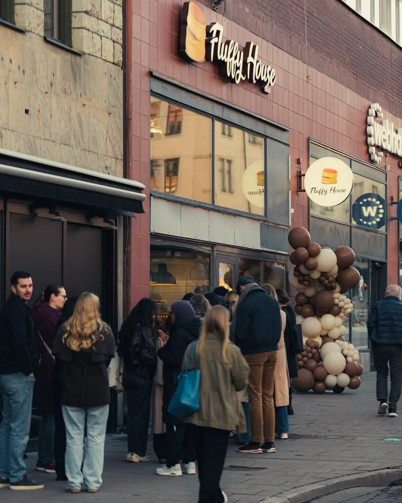
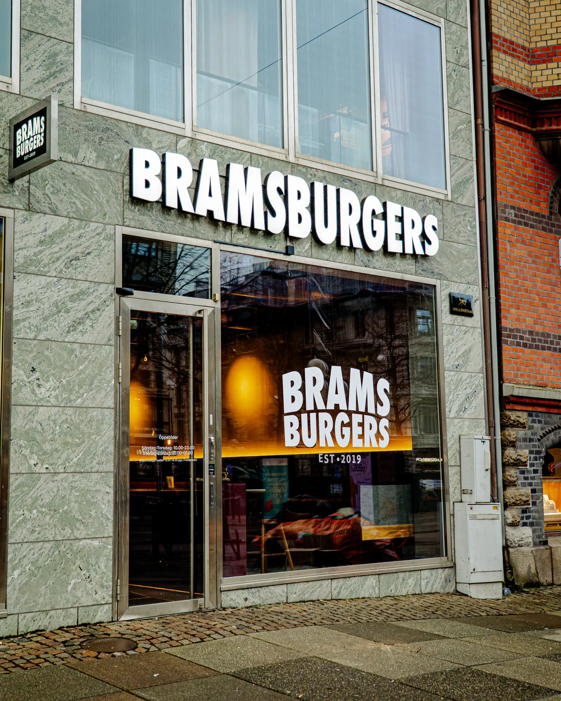

Resultados reales de restaurantes reales.
Aquí mostramos solo restaurantes con los que el grupo ha trabajado de verdad — cifras reales sacadas de Metricool, sin estadísticas maquilladas. Conforme cerremos clientes en España, los publicaremos aquí también.
Restaurantes donde las cifras hicieron el trabajo de verdad.

Fluffy House — de cero a dos ciudades
Estocolmo · Uppsala. Plan Turbo desde septiembre 2025. En 8 meses: 8,68M visualizaciones, 25.100 seguidores en tres plataformas y dos expansiones físicas.

Mazra'a — una clásica palestina encuentra su voz digital
Skånegatan, Estocolmo. Plan Pro desde noviembre 2025. En 5,5 meses: 1,42 millones de visualizaciones y +13.499% de interacciones.

Falafelbaren — un favorito local encuentra más comensales
Hornsgatan, Estocolmo. De cero TikTok a +1 millón de visualizaciones en 3,5 meses — datos verificados en Metricool.

Sushi Revolution — de la apertura a 2,56M de visualizaciones
Mall of Scandinavia, Solna. Plan Pro desde noviembre 2025. Cuentas nuevas — 3.655 seguidores y 1,72M visualizaciones en TikTok en 7,5 meses.

Brams Burgers — de Skärholmen a tres ciudades
Estocolmo · Uppsala · Gotemburgo. Plan Turbo desde 2025. En 14 meses: 4,30M visualizaciones, 25.540 seguidores en cuatro plataformas y dos aperturas nuevas.
Más casos del grupo se publican conforme van cerrando trimestre. Los primeros casos de España aparecerán aquí en cuanto los nuevos clientes acumulen 3 meses de datos.
Vuestro restaurante puede ser el siguiente.
Reserva una llamada gratis de 30 minutos y vemos si tiene sentido aplicar este método a vuestro caso.